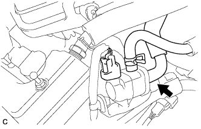
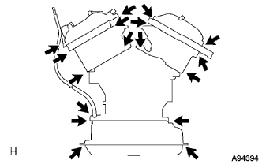
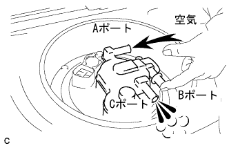
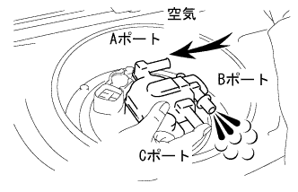
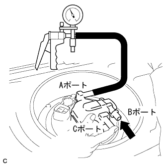

Emission Control System (2GR-FE) Function Inspection |
| 1. Air-Fuel Ratio Compensation System |
Connect SST (TaSCAN) to DLC3.
Following the screen display, select "ECU Data Monitor" - "O2 Sensor Voltage B1S2, B2S2".
Maintain the engine speed at 2500r/min for approximately 2 minutes to warm up the oxygen sensor.
Maintain the engine speed at 2500r/min and check that the SST (TaSCAN) reading changes between 0-1V (feedback).
| 2. Evaporative Emission Control System |
Connect SST (TaSCAN) to DLC3.
 |
After starting the engine, disconnect the vacuum hose of the vacuum switching valve assembly No.1.
Operate following the screen display, select "Active Test" - "Purge VSV", and check that vacuum is generated at the VSV port when the VSV is turned ON.
If the inspection result is abnormal, inspect the following items.
End the "Active Test" and connect the vacuum hose of the vacuum switching valve assembly No.1.
Operate following the screen display, display the "Data Monitor" screen, and select "Purge VSV" so that the operating condition of the purge VSV can be checked.
After the vehicle is fully warmed up, drive with sufficient acceleration and deceleration, and check that the VSV changes from "OFF→ON".
| 3. Visual Inspection of Hoses, Connections and Gaskets |
 |
Inspect the hoses for cracks, leaks or damage.
| 4. Charcoal Canister Assembly Inspection |
Air Flow Inspection
 |
Close port B and, while blowing air into port A, check that air flows from port C.
Inspect Check Valve
 |
Close port C, blow air into port A, and check that air flows.
 |
Close port C and, while applying vacuum (1.96kPa) to port A, check that air is drawn in from port B.